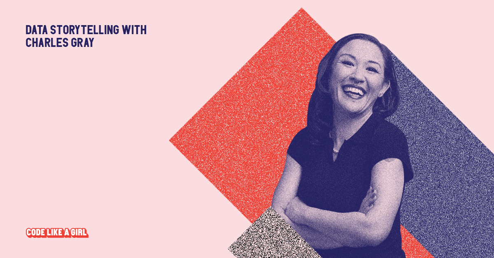

a one-time trophy bitch screams into the void
# link for googlesheet
# https://docs.google.com/spreadsheets/d/e/2PACX-1vRHVN7gtL-qh8JR-VkDNoOrQljL2cO4BOHL5c0RL5nwlGaTMv7R2DZpOed5E-rmiXnDpCbekgh28CpZ/pubhtml
See references at bottom of this page for citation details.
| title | discipline | description |
|---|---|---|
code::proof: Prepare for most weather conditions(C. T. Gray 2019) |
metaprogramming | second paper from thesis, accepted to springer computer science proceedings something something, metaprogramming |
| Truth, Proof, and Reproducibility: There’s no counter-attack for the codeless | metamathematics | first paper from current thesis has been accepted into springer computer proceedings something something, metamathematics(C. T. Gray and Marwick 2019) |
| The Homomorphism Lattice Induced by a Finite Algebra | abstract algebra | The publication of my honours (masters-level) thesis in abstract algebra. Authorship is alphabetical and equal in mathematics. Brian and Jane did a great deal of work on the final paper. But in my thesis, the proofs were all (but two small introductory proofs Brian wrote for completeness) my own. (Davey, Gray, and Pitkethly 2018) |
| Profiling for Profit | marketing | oddly enough, an award-winning consumer behaviour paper, best in the business ethics track (Harrison and Gray 2010, 2012) |
eviatlas:: |
ecology | wrote one paragraph and contributed to discussion on this ecology project(Haddaway et al. 2019) |
| todo:look up | psychology | spent two deep-dive days conjuring a package out of an equation for the Misinformation Lab, and two co-authored papers are submitted |
| Coding of Kindness(C. T. Gray et al. 2019) | open science | a rephrasing of the Code of Conduct, which did not win over the people I was trying to communicate with, but did mean that other survivors reached out, and that was quite lovely |
It was a delight to participate in the opening of the Heidelberg Laureate Forum, where the laureates of mathematics and computer science meet the next generation.
I’ve cued this video to my presentation on the algebra of composition.
There’s no Nobel prize in mathematics and computer science. Instead, there is the Turing award, the Fields medal, and the Abel prize. Each year the Heidelberg Laureate Forum Foundation gathers these laureates of mathematics and computing, along with two hundred talented early-career researchers, and science writers, for a week of lectures, workshops, and events designed to foster conversation and ideas.
It was a gift to present at the opening ceremony and have that introduction; I wasn’t in want of conversation for the entire event. I got to meet so many interesting people.
Slides for the presentation can be found here.

Davey, Brian A., Charles T. Gray, and Jane G. Pitkethly. 2018. “The Homomorphism Lattice Induced by a Finite Algebra.” Order 35 (2): 193–214. https://doi.org/10.1007/s11083-017-9426-3.
Gray, Charles T. 2019.“: Prepare for Most Weather Conditions.” http://arxiv.org/abs/1910.06964.
Gray, Charles T., and Ben Marwick. 2019. “Truth, Proof, and Reproducibility: There’s No Counter-Attack for the Codeless.” arXiv:1907.05947 [Math], July. http://arxiv.org/abs/1907.05947.
Gray, Charles T., Ben Marwick, Jen Richmond, Emily Kothe, Mathew Ling, and Brian Knaus. 2019. “Coding of Kindness: Let’s Figure Out How to Be Better Humans to Each Other.” Coding of Kindness. https://softloud.github.io/codingofkindness/.
Haddaway, Neal R., Andrew Feierman, Matthew J. Grainger, Charles T. Gray, Ezgi Tanriver-Ayder, Sanita Dhaubanjar, and Martin J. Westgate. 2019. “EviAtlas: A Tool for Visualising Evidence Synthesis Databases.” Environmental Evidence 8 (1): 22. https://doi.org/10.1186/s13750-019-0167-1.
Harrison, Paul, and Charles Gray. 2010. “The Ethical and Policy Implications of Profiling ‘Vulnerable’ Customers: Implications of Customer Profiling.” International Journal of Consumer Studies 34 (4): 437–42. https://doi.org/10.1111/j.1470-6431.2010.00873.x.
Harrison, Paul, and Charles Ti Gray. 2012. Profiling for Profit : A Report on Target Marketing and Profiling Practices in the Credit Industry. Consumer Action Law Centre.